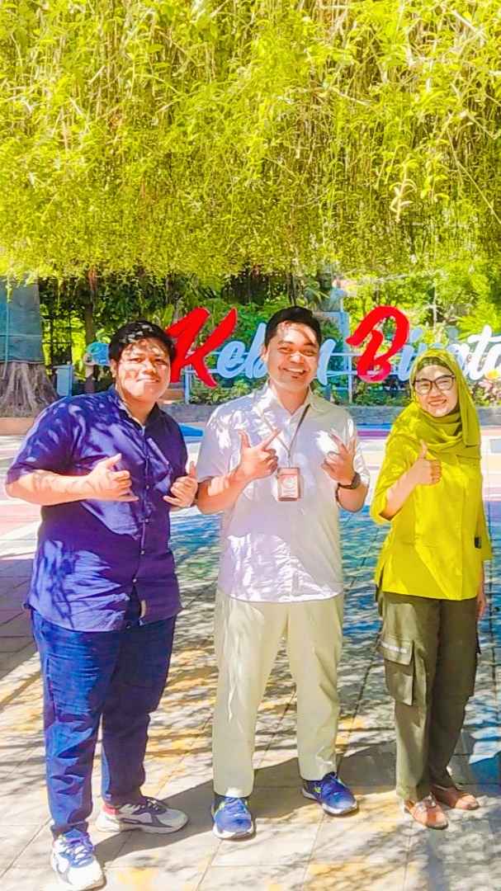
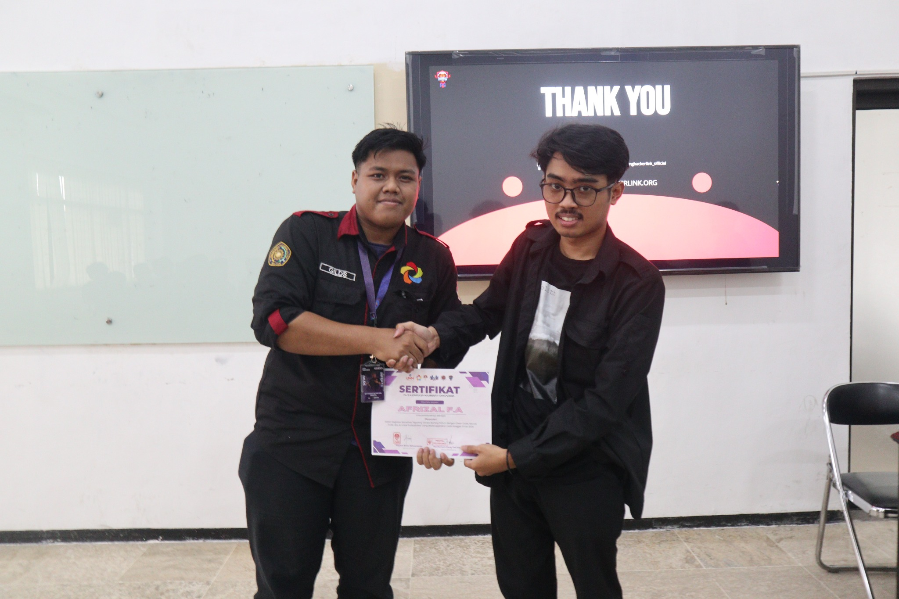

I am focused on the intersection of network infrastructure, network security, and cybersecurity, supported by hands-on exposure to IT operations, troubleshooting, system development, and collaborative technical work.
Professional Portfolio
Muchamad Gilang
Dwi Saputra, S.Kom.
Network Engineering Network Security Cybersecurity
Building practical capabilities across network infrastructure, security, IT operations, and technology-driven problem solving.
03Focus Areas
2025Internship & Leadership
∞Continuous Learning
NETWORK • SECURITY • CYBERSECURITY

PORTFOLIO / 2026MGDS
⚡
IT
OPERATIONS
IT
OPERATIONS
◈
SECURITY
FOCUS
SECURITY
FOCUS
01 / ABOUT
A technical foundation
A technical foundation
with practical experience.
“
Technical growth is strongest when learning is converted into visible work, documented projects, and real problem solving.
PROFESSIONAL PRINCIPLE
02 / EXPERIENCE
Professional experience
Professional experience
in IT operations.
IT TEAM / SURABAYA
JUL 2025 — AUG 2025
PD Taman Satwa
Kebun Binatang Surabaya
IT Team — Internship
Hands-on internship experience supporting IT activities, network monitoring, router maintenance, troubleshooting, and internal system development.
Network Monitoring
Router Maintenance
IT Support
Troubleshooting
Web Development


03 / FEATURED PROJECT
Employee Management
Employee Management
System.
INTERNAL WEB SYSTEM
DOCUMENTED PROJECT
Role-Based Employee Management
A web-based employee management system structured around different user roles and access levels.
01KaryawanUser access and employee-side services
→
02HRD ManagementEmployee data and administrative management
→
03DirekturManagement-level monitoring based on access authority
04 / LEADERSHIP
Technical event
Technical event
leadership.

31
MAY
2025
MAY
2025
LEMBAGA SEMI OTONOM (LSO) KALIBER
Ketua Pelaksana Workshop
“Ngoding Cerdas Python dengan Clean Code, Secure Code dan AI untuk Produktivitas”
Led the implementation of a technical workshop event, coordinating the execution of the program and supporting collaboration across the organizing team.
LeadershipEvent ManagementCoordinationTeam Collaboration
05 / CREDENTIALS
Certificates &
Certificates &
achievements.
06 / DOCUMENTATION
Work, events,
Work, events,
and technical journey.
07 / CONTACT
Let's connect.
Open to professional opportunities, collaboration, technical projects, and continuous learning.